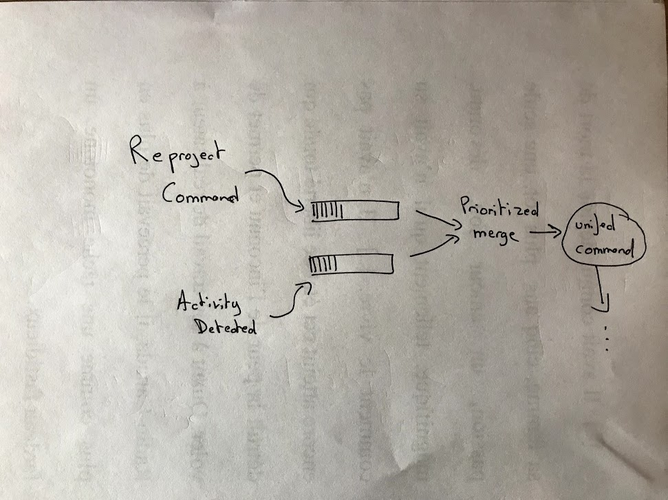

Introduction
Do not expect
- "best practices"
- a comparison of the various approaches to write process managers (AWS Step Functions anyone?)
- Complete, fully-functional akka-streams examples
We will take a look at
- Why/When sagas are needed
- How sagas and Event Sourcing complement each other
- How akka-streams can help with creating sagas
Are you...
- interested in Distributed Systems and Big Data?
- interested in working in a remote-first work environment?
- interested in Scala/FP?
Check us out at transparency.narrative.io
Come talk to me at the end of the presentation
Stop me anytime for questions
Saga / Process Manager
Other names
- Sagas
- Activities
- Business Processes
- Process Managers
- Workflows
- Orchestrations
- Coordinating Workflow
- Business Process Management (BPM)
- Long-running processes
- ???
What is a saga? (1)
(from Eventuate Tram Saga)A saga maintains consistency across multiple microservices by using a series of local transactions that are coordinated using messages or events.
What is a saga? (2)
(from Jonathan Oliver)
Sagas manage process. They contain business behavior, but only in the form of process. This is a critical point. Sagas, in their purest form, don't contain business logic.
What is a saga? (3)
(from Martin Fowler)
The danger is that it's very easy to make nicely decoupled systems with event notification, without realizing that you're losing sight of that larger-scale flow, and thus set yourself up for trouble in future years
What is a saga? (4)
(from Microsoft)
The saga concept removes the need for a distributed transaction by ensuring that the transaction at each step of the business process has a defined compensating transaction
Tradictional View (1)
(from Particular Software)
Traditional View (2)
withinTransaction {
takeOrder()
collectPayment()
makeCoffee()
deliverCoffee()
}
Traditional View (3)
- Linear view only exists in programmer's dreams
- Payment service is provided by your bank
- Scale vertically (cashier/barista)
- Scale horizontally (multiple cashiers/baristas)
- Coffee machine might break
- Might run out of a specific type of coffee
- Client does not BLOCK WAITING for coffee
- Blended drinks and drip coffee don't take the same time
- batch-prepare several orders to save time
Traditional View (4)
withinDistributedTransaction {
takeOrder()
collectPayment()
makeCoffee()
deliverCoffee()
}
Traditional View (5)
letsImplementTransactionsLater {
takeOrder()
collectPayment()
makeCoffee()
deliverCoffee()
}
You don't need a Process Manager
- if your Micro Services have nothing to do with each other
- if your entire system performs short-lived operations on a single database that supports transactions (CRUD)
- if you want to maintain the illusion that
- everything happens synchronously
- failures never happen
- there is no such thing as long-lived transactions
You may need a Process Manager
- if your (micro-?) services interact with each other for anything else than pure queries
- if distributed transactions / 2PC sound like something that could address your concerns
- if understanding what the system does as a whole requires understanding the inner-workings of all micro services
- if you would like the coordination logic to be testable / easily modify message routing
What's so hard about long-running transactions?
- Inconsistent state
- Ordering of messages
- Duplication of messages
- Correlation of messages
Implementing a Saga (1)
- Saga: series of steps
- Step: transaction, compensating transaction or both
- Transaction: invocation of a saga participant using a command
- Track the transactions / overall state
- Rollback: on failure, execute the compensating transactions
Implementing a Saga? (2)
- A State Machine
- A way to persist the state machine
- A way to send (ideally: idempotent) commands to the various subsystems
- A way to split the long-running transaction into several smaller, discrete steps
- Compensating actions to react to the failure scenarii (write-off, retry, compensate)
Implementing a Saga? (3)
- Model the interactions (MESSAGES) between actors (humans, software, external services)
- Business-level solution to addressing failures
- Non-virtual world: "pretend the last 10 minutes did not happen"
Implementing a Saga? (3)
- Model the interactions (MESSAGES) between actors (humans, software, external services)
- Business-level solution to addressing failures
- Non-virtual world: "pretend the last 10 minutes did not happen"
- Don't forget: not all mistakes are worth preventing
Implementing a Saga (4)
(from Particular Software)
Event Sourcing
Highly recommended read
The Log: What every software engineer should know about real-time data's unifying abstractionYou can't fully understand databases, NoSQL stores, key value stores, replication, paxos, hadoop, version control, or almost any software system without understanding logs; and yet, most software engineers are not familiar with them
The Log

- Distributing messages
- Can store events/facts: what happened
- Can store commands: a request to perform a task
- Can store state
- Ordering messages: index = "time"
Common uses of logs
- ACID: keep data structures and indexes in sync (WAL)
- Database write-ahead log (keeps data structures and indexes in sync)
- Master-Slave replication
- Generalized Pub-Sub/Queuing mechanism (Kafka)
- Wearable device ~> Mobile App ~> Backend sync / replication
- Akka Actors Mailbox
- Raft/Consensus Algos/Blockchain = maintains a log
Duality between event log and table
- (re)build a table / index from a database
- create a changelog containing all the successive states of the database after each update
Distributed systems and determinism
(from LinkedIn Engineering)

CQRS/Event Sourcing
- User actions trigger commands
- Commands trigger events
- Events are persisted ("write" model)
- Several optimized "read" models are built
- Commands can be rejected
- Events happened, accept the reality
Case Study
Not lucky-enough to work on a complex transactional system involving billing, flight/car/hotel booking?
Event logs/queues benefits
- Decoupling of Analysis / Detection services
- Reliable communication / retries on system/network failures / etc
- Determinism
- Unit-testing
- Eventual consistency
Gotchas
- Do not forget to make projections idempotent
- Eventual consistency
Reprojections
Events are not enough
- Events = Notifications. Something HAS HAPPENED
- Commands = Imperatives. Request to perform an action
- "Please re-analyze all activities for all users" == Command
- "Please re-analyze all activities for user X" == Command
Analysis process / reprojection
- Is order-sensitive/stateful for a particular user
- When reprojecting activities, old activities should be processed before new ones are analyzed
- Takes time
- Multiple reprojections can be requested concurrently
- Reprojection should be crashproof / should restart where it left
akka + saga = ❤️
Reminder
- A State Machine
- A way to persist the state machine
- A way to send (ideally: idempotent) commands to the various subsystems
- A way to split the long-running transaction into several smaller, discrete steps
- Compensating actions to react to the failure scenarii
State Machine
def nextState(
state: SagaState,
message: (Offset, Event)): SagaState = {
// your logic to combine state with message.
// Returns a new state
state.combine(message)
}
def nextStateFlow(initialState: SagaState = SagaState()): Flow[(Offset, Event), SagaState, NotUsed] = {
Flow[(Offset, Event)].fold(initialState)(nextState)
}
Persist the state machine (1)
- Persist the activities performed by the state machine as events
- ReprojectionStartedForAllUsers
- ReprojectionStartedForUser1
- ReprojectionEndedForUser1
- ReprojectionEndedForAllUsers
- To rebuild the state: Replay all events using the State Machine logic from the last snapshot
- Save a snapshot with the final state (optimization)
Persist the state machine (2)
def rebuildFlow(snapshotStore: SnapshotStore): Flow[(Offset, Event), Done, NotUsed] = {
Flow[(Offset, Event)]
.flatMapConcat { case (offset, event) =>
val key = eventToKey(event)
Source.single(key)
.mapAsync(1)(snapshotStore.fetch(_))
.flatMapConcat { previousStateOpt =>
val initial = previousStateOpt.getOrElse(SagaState())
Source.single(offset -> message)
.via(MySaga.nextStateFlow(initial))
}
.mapAsync(1) { sagaState =>
snapshotStore.update(key, sagaState)
sagaState
}
}
}
Receive commands (1)
- Prioritize "reprojection" commands over processing "ActivityDetected" events 
Receive commands (2)
def combinePreferred[T](highPriority: Source[T, NotUsed], lowPriority: Source[T, NotUsed]): Source[T, NotUsed] = {
Source.fromGraph(GraphDSL.create() { implicit b ⇒
import GraphDSL.Implicits._
val merge = b.add(MergePreferred[T](1))
highPriority ~> merge.preferred
lowPriority ~> merge.in(0)
SourceShape[T](merge.out)
})
}
Split into smaller steps
- `ProjectActivity` command for each individual ActivityDetectedEvent
- `ReprojectAll` command is done when all `ProjectActivity` commands have been processed
Compensating actions
- Log network/system failure
- Alert
- Retry until Developers have fixed the underlying issue
Thank You!
Check us out at transparency.narrative.io